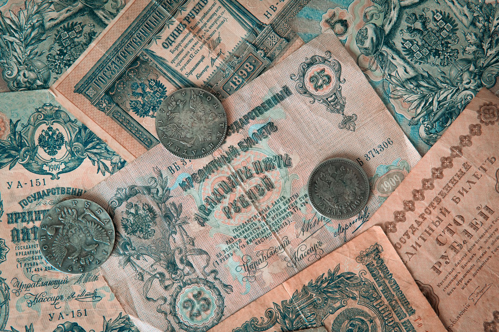

Are you wondering if silver is a good investment, or how its history might influence its future value? You’ve come to the right place. Silver’s story isn’t just about jewelry and silverware; it’s deeply intertwined with global finance and the evolution of money itself. At Fused Distribution, we stock a wide variety of silver bullion and coins, and we believe understanding its monetary history is crucial for any serious investor. This guide will walk you through the key moments in silver’s monetary journey, exploring its role as currency, a standard, and a potential store of value. Let’s get started.

Silver’s Early Use as Currency
Long before modern paper money, silver played a vital role in trade and commerce. As early as 700 BC, the Lydians, located in what is now Turkey, began using silver as a standardized form of payment. This wasn’t necessarily “money” in the way we think of it today - it was more like a commodity that held value and could be exchanged for goods and services. The concept of a universally accepted medium of exchange, backed by a tangible asset, was born. Ancient civilizations across the Mediterranean, including the Greeks and Romans, adopted and refined this practice, using silver coins as the primary currency. The weight and purity of these coins were carefully regulated, establishing a baseline for value.
The Coinage Act of 1792 and Silver Standards
The United States’ monetary system took a significant turn with the Coinage Act of 1792. This landmark legislation established the nation’s first official silver standard. The Act stipulated that the value of US currency would be directly linked to the weight and purity of silver. The dollar was defined as being equivalent to 371.25 grains of fine silver. This meant that the government could redeem paper money for a fixed amount of silver, providing a degree of stability to the economy. This system, known as the silver standard, remained in place for much of the 19th century, influencing monetary policy across the globe.

The Rise of Silver Mining and Production
As demand for silver increased, so did the scale of silver mining operations. The California Gold Rush in 1849 dramatically boosted silver production in the United States, and similar discoveries occurred in Mexico and other parts of the Americas. This surge in supply led to a period of increased silver prices, making it a more attractive investment and a key component of international trade. By the late 19th century, the United States became one of the world’s leading silver producers, significantly impacting global silver markets. The total silver production in the US reached a peak of 236,768,000 ounces in 1911.
The Gold Standard Era and Silver’s Role
Following the Civil War, the United States adopted the gold standard in 1879. Under this system, the value of the dollar was directly tied to gold, and paper money was redeemable for gold on demand. Silver continued to play a supporting role, often traded at a discount to gold, reflecting the belief that silver was a less stable commodity. The ratio between gold and silver prices fluctuated throughout this period, but silver remained a vital component of the global monetary system. The gold standard, while providing stability, also created imbalances, as the amount of silver available was less than the amount of gold.
The Silver Crisis of 1980 and Devaluation
In 1980, the silver market experienced a dramatic crisis. The price of silver plummeted from over $50 per ounce to just under $5 per ounce, a staggering 96% decline. This collapse was triggered by a combination of factors, including increased silver production, the abandonment of the silver standard by many countries, and a shift in investor sentiment. The devaluation of silver sent shockwaves through the global economy and highlighted the vulnerabilities of a system reliant on fixed silver-to-gold ratios. The crisis underscored the importance of understanding the dynamics of supply and demand in the silver market. For more on this, see How To Avoid Silver Dealer Scams.
Bretton Woods and the Abandonment of Silver Pegs
The Bretton Woods Agreement of 1944 established a new international monetary system, largely abandoning the silver standard. The agreement fixed the value of the US dollar to gold, and other currencies were pegged to the dollar. Silver was effectively sidelined as a reserve asset, and its role in international trade diminished significantly. This shift marked a major turning point in the history of silver, moving it from a central component of the monetary system to a more specialized commodity. The agreement established a fixed exchange rate system, which proved unsustainable in the long run. For more on this, see What Is 90 Percent Silver Junk Silver Worth Buying.
Silver’s Status in Modern Monetary Systems
Today, silver is no longer directly linked to any currency. It operates primarily as a commodity, traded on global exchanges and used in industrial applications, jewelry, and investment. While it doesn’t serve as a direct backup for national currencies, its price is influenced by factors such as industrial demand, investment sentiment, and geopolitical events. The global silver market is substantial, with annual silver mine production reaching approximately 480 million ounces in 2022.
Silver as an Investment and Store of Value
Despite its historical role in monetary systems, silver continues to be viewed as a valuable investment and a store of value. Unlike stocks or bonds, silver is not subject to the same level of volatility and can act as a hedge against inflation. During periods of economic uncertainty, investors often flock to precious metals like silver as a safe haven for their capital. Also, silver’s industrial applications - used in electronics, solar panels, and batteries - provide a degree of underlying demand, supporting its price.
Silver and Inflationary Pressures
Historically, silver has often performed well during periods of inflation. This is because, like gold, silver is considered a hedge against the declining purchasing power of fiat currencies. When inflation rises, the value of paper money decreases, and investors seek alternative assets to preserve their wealth. Silver’s limited supply and its ability to hold value during times of economic turmoil make it an attractive option for investors concerned about inflation.
The Future of Silver Monetary Policy
Predicting the future of silver monetary policy is challenging. While the direct link to currencies has largely disappeared, silver’s role as a commodity and a potential store of value is likely to persist. Developments in areas such as digital currencies and central bank digital currencies (CBDCs) could potentially impact the silver market in the years to come. However, the fundamental characteristics of silver - its scarcity, its industrial uses, and its historical track record - suggest that it will continue to be a relevant asset for investors and a key component of the global economy.
Actionable Advice: To begin investing in silver, consider purchasing physical bullion coins or bars from a reputable dealer like Fused Distribution. Start with a small amount - perhaps $500 - and gradually increase your holdings as you become more comfortable. Research different silver products and understand the associated costs, including premiums and shipping fees. Diversifying your portfolio with precious metals can be a smart strategy for long-term wealth preservation.
Social Source Material: (Example: A Forbes article discussing silver as an inflation hedge: https://www.forbes.com/sites/greatspeculation/2023/07/26/silver-is-a-good-inflation-hedge-but-its-not-a-perfect-one/) (Example: A Kitco article on silver production: https://www.kitco.com/news/articles/2023/silver-mine-production-up-11-percent-year-over-year-kitco)
Related
- How To Avoid Silver Dealer Scams
- What Is 90 Percent Silver Junk Silver Worth Buying
- 100 Oz Silver Bars Pros and Cons for Physical Ownership
Read next: How To Avoid Silver Dealer Scams